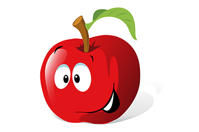

りんごについて
シャキッとした食感と甘酸っぱい風味が特徴ですよね。さま ざまな加工品に用いられ、私たちにとって馴染み深い果物ともいえるでしょう。
しかし、小さい頃から当たり前のようにある果物なだけに、その知識はあまり知られていません。そこで･･･当サイトでは、りんごの知識（雑学）をメインにおおくりしていきます。
紅将軍

サクッとした歯ごたえ、豊富な果汁と甘い香りでまろやかな味の津軽。甘味と酸味のバランスがとれた昂林。ツル割れが生じやすくなかなか市場に出回らないことから、一部では幻のリンゴとも言われている紅将軍。
焼きりんご

“焼きりんご”はりんごを丸ごと食べられる、冬の定番スイーツです。 りんごの芯をくり抜いたら砂糖やバターを詰め込み、あとはじっくり焼き上げるだけ･･･と作り方も超簡単。
りんご隊隊長
りんご隊長は、りんごについて知識をもち、新しいりんご料理につねにチャレンジしています。